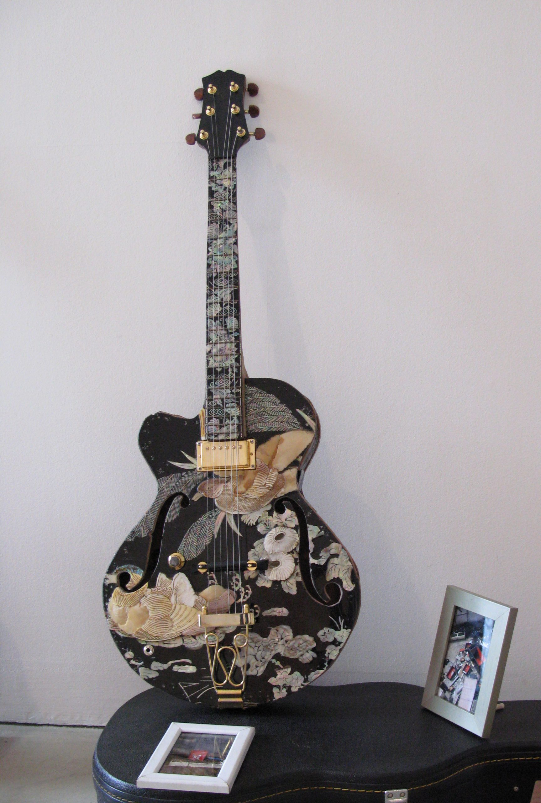

메인
소개
인사말 및 연혁
시설안내
오시는길
관람
전시
SNS
인스타그램
페이스북
Welcome to 'Gyeonggi Art Gallery'.
경기도민을 위한 미술문화기관,
경기도 미술관입니다.
Now on View
콜과 콜의 파란색 물건들
, 2006, 윤정미

남자의 길-불광동 첫사랑
, 2007, 배영환
캐주얼 비주얼, 2006
, 송영화
연인 또는 부부, 2006
, 정재석
더 감상하기